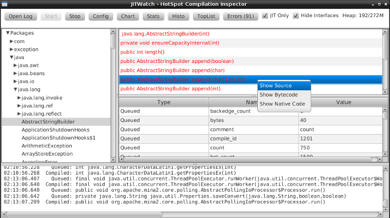

C, Crypto & Clojure
@lvh
Slides
Introduction

C, Crypto & Clojure
(with ✨)
Why Clojure?
- I 💖 Clojure
- Easier R&D
Why crypto?
- That's what I do
- Don't reimplement your own crypto
PCLMULQDQ,AES-NI, &c
Why C?
- More about OS ABI ("native code") than C
- Converse: "why only use the JVM/Clojure?"
- Performance, but not only about performance
- Crypto, OS features, native GUI, GPU…
Let's call native code!
(on the JVM, for now)
JNI
Code → JNI call
⟿
JNI impl -> lib
JNI
public class NativeStuff { public static native long getpid(); // ^^^^^^ public static void main(String[] args) { getpid(); } static { System.load("/some/dir/nativestuff.dylib"); } }
javah
/* DO NOT EDIT THIS FILE - it is machine generated */ #include <jni.h> /* Header for class io_lvh_cljn_NativeStuff */ #ifndef _Included_io_lvh_cljn_NativeStuff #define _Included_io_lvh_cljn_NativeStuff #ifdef __cplusplus extern "C" { #endif /* * Class: io_lvh_cljn_NativeStuff * Method: getpid * Signature: ()J */ JNIEXPORT jlong JNICALL Java_io_lvh_cljn_NativeStuff_getpid (JNIEnv *, jclass); #ifdef __cplusplus } #endif #endif
JNI implementation
#include "lvh_io_cljn_NativeStuff.h" jlong JNICALL Java_lvh_io_cljn_NativeStuff_getpid (JNIEnv *env, jclass c) { return getpid(); }
Toolchain
ᛠᛰᛜᛍᛥ ᚥᚮ‽
Clojure + JNI in the wild
neanderthal → opencl → jocl
static native boolean initNativeLibrary(String fullName);
JNI
Great, if someone else does the compily bit
JNA
import com.sun.jna.Library; import com.sun.jna.Native; public class NativeStuff { public interface GetPid extends Library { long getpid(); } public static void main(String[] args) { GetPid getpid = (GetPid) Native .loadLibrary(GetPid.class); getpid.getpid(); } }
JNA
- Performance isn't great
- Some missing features
JNR
Code → JNR stub → JNI call
⟿
JNI impl -> libffi -> lib
Worst of both worlds?!
- JNI platform-specific part is shared
- Probably ships with support for your platform
- JNR-specific part is generated
Best of both worlds
JNA UX + JNI perf
jnr-ffi
public interface LibC { public int gettimeofday( @Out @Transient Timeval tv, Pointer unused ); }
struct
public static final class Timeval extends Struct { public final time_t tv_sec = new time_t(); public final SignedLong tv_usec = new SignedLong(); }
Thanks JRuby!
fs, subprocesses, stat, tty/pty/fcntl, fast IO
Off-the-shelf
jnr-posix, jnr-enxio, jnr-unixsocket, …
Tooling
jnr-constants, jnr-x86asm, …
Let's go write some code!
(probably Java I guess?)
caesium :: libsodium
- Cryptographic library
- NaCl with cheese
How much Java?
$ wc -l **h
...
9166 total
😰
Well, OK, but it's easy Java, right?
Mostly char *
So many JVM types
Pointer, Buffer, String, [B, ByteBuffer…
Return type?
- Fn for each one, or by input type?
encrypt-to-buf,encrypt-to-array, …- What if you call me with 4 different types?
Functional vs mutate in place
void f(*int out, int x)int f(int x)
Getting the right types
- Conversions? (Copying!)
- Reflection? (Slow, buggy!)
- Explicit dispatch? (Large methods!)
- Give specific type? (Hard to use!)
Combinatorial explosion
Thousands of exposed syms
Pick a type
- Pointer: 🚫
- String: 🚫 (except constants)
- [B, ByteBuf fer: ?
[B advantages
- By far most common type
- Easy to use, e.g. serializers
ByteBuffer advantages
- Supported API for "direct" allocation
- Cheap slicing, "views" over memory
Asymmetry
byte array → indirect ByteBuffer: fast!
indirect ByteBuffer → byte array: fast?
direct ByteBuffer ↔ byte array: slow!
Conclusion
- Expose everything
- In-place API:
- Takes buffers only
- Functional:
- Takes anything, wraps to buf
- Returns a byte array
Performance
Cliff's notes
- Penalty is small
- Options to make it tiny
- JVM tooling is cool
JITWatch

Getting ASM dumps
-XX:+UnlockDiagnosticVMOptions
-XX:+PrintAssembly
Getting ASM dumps
Java HotSpot(TM) 64-Bit Server VM warning: PrintAssembly is enabled; turning on DebugNonSafepoints to gain additional output ... yada yada yada ...
Getting ASM dumps
Java HotSpot(TM) 64-Bit Server VM warning: PrintAssembly is enabled; turning on DebugNonSafepoints to gain additional output Could not load hsdis-amd64.dylib; library not loadable; PrintAssembly is disabled
Acquire hsdis
- Check out OpenJDK
- Build a binutils
- Extensive cursing
hsdis
0x00007fb8a181a2e0: mov DWORD PTR [rsp-0x14000],eax 0x00007fb8a181a2e7: push rbp 0x00007fb8a181a2e8: sub rsp,0x30 ;*aload_0 ; - clojure.lang.ASeq::size@0 (line 188) 0x00007fb8a181a2ec: nop 0x00007fb8a181a2ed: movabs rax,0xffffffffffffffff 0x00007fb8a181a2f7: call 0x00007fb8a1045f60 ; OopMap{off=60} ;*invokevirtual count ; - clojure.lang.ASeq::size@1 (line 188) ; {virtual_call} 0x00007fb8a181a2fc: add rsp,0x30 0x00007fb8a181a300: pop rbp 0x00007fb8a181a301: test DWORD PTR [rip+0x18527df9],eax
JNR tricks
Mostly @Annotations
@IgnoreError
- JVM (OpenJDK) uses
errno - So does some C code
- Gotta save and restore
@In and @Out
- Value gets copied to & from
@In: only copy to native@Out: only copy from native
@Pinned
- Don't copy the value at all
- Tell JVM not to move it
- Pass the pointer straight to C
@Direct and @Transient
Native backing memory
Opt-in
How Clojure helped
caesium
Look Ma, no Java!
Host interop
Doesn't hide Java/JVM
definterface
(definterface LibC (^int gettimeofday [^Timeval ^{Out {} Transient {}} tv ^Pointer unused]))
The Clojure way
- Have some data
- Don't mess it up
Some data
(def ^:private raw-bound-fns '[[^int sodium_init []] [^String sodium_version_string []] [^long ^{size_t {}} crypto_secretbox_macbytes []] [^String crypto_secretbox_primitive []] [^int crypto_secretbox_easy [^bytes ^{Pinned {}} c ^bytes ^{Pinned {}} m ^long ^{LongLong {}} mlen ^bytes ^{Pinned {}} n ^bytes ^{Pinned {}} k]]] ;; ... )
Expose every byte type
(mapcat permuted-byte-types raw-bound-fns)
- Specify once with bytes
- Get ByteBuffer permutations for free
@IgnoreError
Just map a function over some values
defconsts
;; in caesium.crypto.secretbox (defconsts [keybytes noncebytes macbytes primitive]) ;; => (do (def keybytes "Constant returned by `crypto_secretbox_keybytes`. See libsodium docs." (.crypto_secretbox_keybytes caesium.binding/sodium)) ;;... )
✨
;; in caesium.crypto.box (✨ open-easy m c n pk sk) ;; => (.crypto_box_open_easy m c (long (buflen c)) n pk sk)
✨
(defmacro ✨ "Produces a form for calling named fn with lots of magic: * The fn-name is specified using its short name, which is resolved against the ns as per [[defconsts]]. * All bufs are annotated as ByteBuffers. * Buffer lengths are automatically added. The emoji name of this macro accurately reflects how easy I want it to be for third parties to call it." ;; ... )
This stuff matters
- Repetition leads to mistakes
- API consistency through laziness
Conclusion
Clojure 💖 native libs
- You might not need them
- Don't despair if you do
Yay open sores
- JNR is great!
- At least one bug in jnr & Clojure
- Zero-copy for cffi, PyCA/cryptography
Future work
- CLJS (native library on V8, vs emscripten in the browser?)
- Ship native binaries with caesium
- Bind all of libsodium
Nonce-misuse resistant cryptography
Encrypting with nonces
Number used once
What if I don't?
- Probably decrypt those ctexts
- Arbitrary forgeries afterwards
API
E(k, n, p) -> c
Is this the default API we want?
GCM has other problems
(not gonna talk about them now)
Confusing!
GCM was the good ciphersuite, right?!
TLS alternatives are worse
GCM is fine in 1 specific case
- Short-lived keys
- Coordination about nonces
… so just use TLS!
Distributed systems
Encrypting a cookie or DB entry
Programmers don't grok IVs/nonces
Evidence in how often they…
- mess them up
- end up with ECB
OK, so randomize the nonce!
Nope!
- GCM: 96 bits
- Salsa20: 64 bits
People still mess it up
- Nonce reuse in TLS
- Bad random during encryption
Fernet
- Right API!
E(k, p) -> c - Safe! (IND-CCA2, EtM)
- Weird choices
- Encryption-time random
Goals
Fernet, modern crypto done right
Goals
- Easy API
- Only safe choices
- Easy to implement
- Easy security proof
- Wide security margin
- Fast enough (~10% penalty)
Busted RNG & reused nonce
total catastrophe
(decrypt, forge)
⬇
attacker can detect duplicates
(not decrypt, not forge)
Idea: synthesize nonce from plaintext
(maybe mix with randomness)
Started as research about "keywrap"
Deterministic encryption
magicnonce
secretbox-rndsecretbox-detsecretbox-nmr
Rough idea
BLAKE2b as a PRF → nonce XSalsa20 + Poly1305 (big nonce space)
Perf!
Pretty good (but wait for the paper)
What about CAESAR?
- Serves any masters!
- Only 1 NMR suite in round 3: AEZ
- Perf always worse, but how much?
- Not worth it for TLS-like protocols
What about GCM-SIV?
Thanks!
- Conj organizers
- Wayne Meissner, Charles Nutter (JNR)
- Paul Kehrer, PyCA
Q&A
@lvh
_@lvh.io
https://latacora.com
{lvh,youagain}@latacora.com